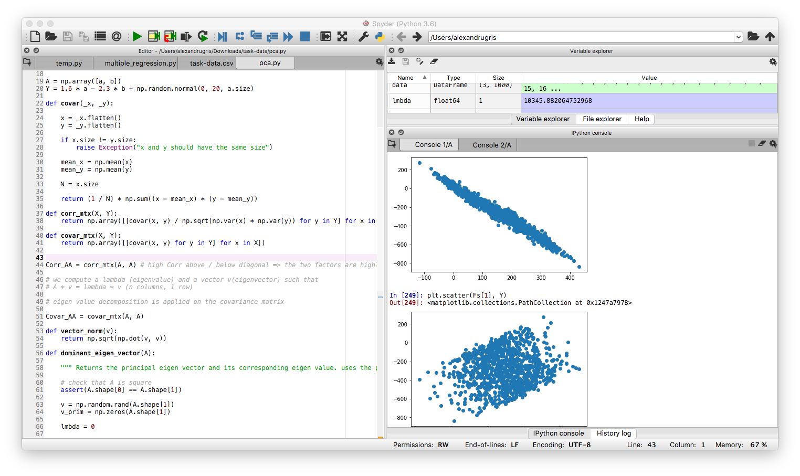
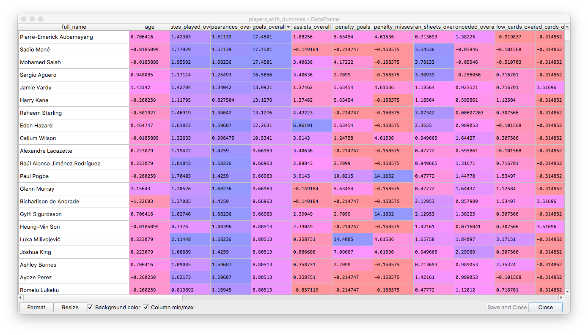
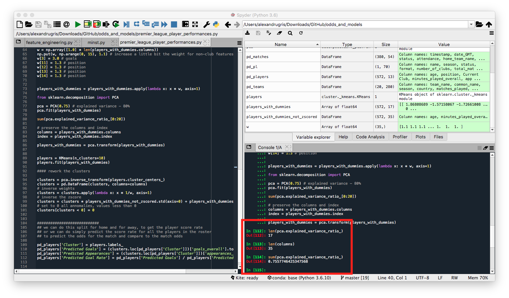
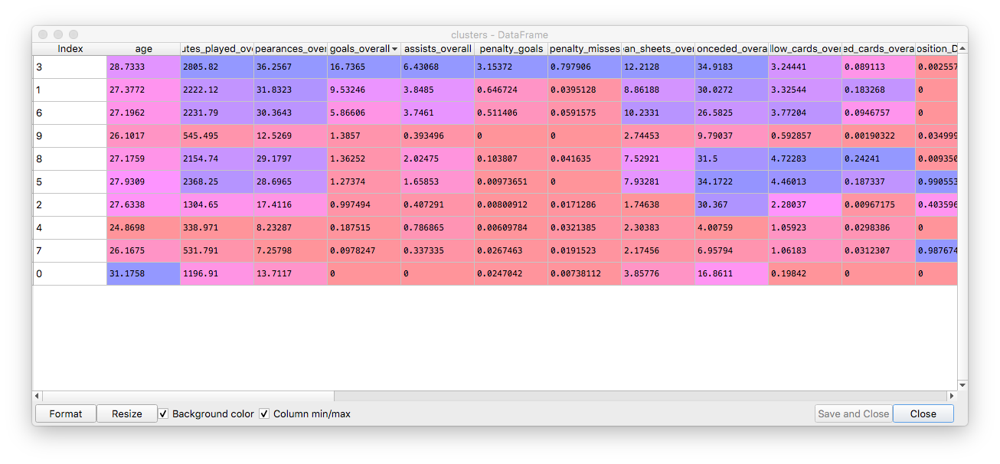
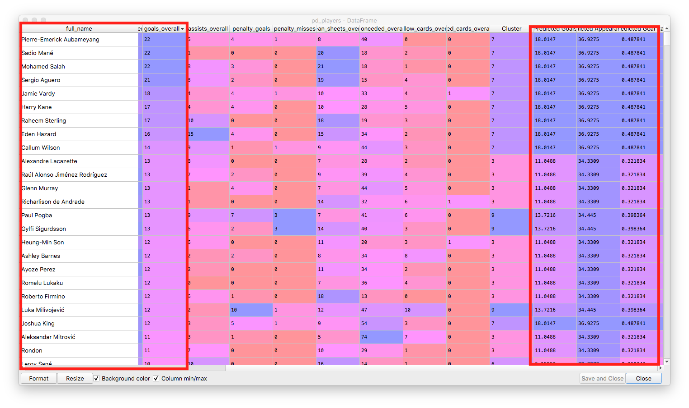

Dimensionality Reduction
This post is about dimensionality reduction. It starts with PCA, a method for finding a set of axes (dimensions) along which to perform regression such that the most relevant information in data is preserved, while multicollinearity is avoided. It then applies PCA and K-Means to a dataset of Premier League player performances, in order to obtain relevant groupings despite randomness in data.
PCA (Principal Component Analysis)
PCA is mathematical optimization problem. It aims to find the direction line along which the distance between projected data points is the greatest, that is it has the largest variance. We choose this direction because the largest amount of information about the value of each point is preserved in this projection. The second principal component is an axis perpendicular to the first axis and so on, for multi-dimensional coordinate spaces. This choice of axes not only preserves the most amount of information, but also avoids multicollinearity, as the principal components are always perpendicular to each other.
The problem can be rephrased as: given a set of highly correlated factors, [X1 ... Xn], find a equal number of factors, [F1 ... Fn], completely uncorrelated to each other, sorted so that Var(F1) > ... > Var(Fn), on which we are able to describe our regression problem as Y = A + B1 * F1 + ... Bn * Fn. These factors satisfy the equality Var(F) == Var(X), meaning we don't lose information when we do the decomposition along these new axes.
It is important to notice the inequality, `Var(F1) > ... > Var(Fn). The higher the variance along that particular axis, the more information is contained in that axis..
The linear algebra problem that helps us find these factors is called eigenvalue decomposition and can be phrased as:
Find F1 = a1X1 + ... + anXn such that Var(F1) is maximized and the coefficients a1 .. an satisfy the constraint a1^2 + ... + an^2 = 1. F1 is the principal component 1, v1 = [a1,...,an] is called eigenvector 1 and e1 = Var(F1) is called the eigenvalue of the principal component F1.
Principal component F2 = b1(X1 - F1) + ... + bn(Xn - F1) is subject to the same constraints. Like this, we have defined a recurrent problem which allows us to find all Fn components.
Results from this decomposition are:
-
eigenvalues: tell us how much of the variance can be explain by this particular component
-
the principal components themselves: these can be used in regression if the eigenvalues are high enough
-
eigenvectors: which are needed to calculate the principal components as follows:
[Fi] = [Xi] * [Vi]. That is, the column matrix containing all factors is the matrix product between the column matrix of eigenvectorsVi=[a1 ... an]and the original factor matrix,X=[X1 ... Xn], (n factors, each with k elements)
Now, dividing each eigenvalue ei=Var(Fi) to the total variance of F, Var(F) = Var(F1) + ... Var(Fn) since Covar(Fi, Fj) = 0, we obtain a vector v with sum(vi) = 1. The plot of this vector is called scree plot and shows how much each factor contributes to explaining the variance of the original data. This is the most important decision tool for us to decide which factors we keep in our analysis.
More information here
Eigenvalue Decomposition
The following Python code uses the power method together with deflation for computing the eigenvectors and eigenvalues for a square matrix A.
import numpy as np
def vector_norm(v):
return np.sqrt(np.dot(v, v))
def dominant_eigenvector(A):
"""
Returns the principal eigenvector and its corresponding eigenvalue.
Uses the power method technique.
"""
# check that A is square
assert(A.shape[0] == A.shape[1])
v = np.random.rand(A.shape[1])
v_prim = np.zeros(A.shape[1])
lmbda = 0
# TODO: add raleigh for faster convergence
while np.max(v-v_prim) > 1e-10:
v_prim = np.dot(A, v)
lmbda = vector_norm(v_prim)
v, v_prim = (v_prim / lmbda, v)
# eigenvalue, normalized eigenvector
return (lmbda, v)
def eigen_decomposition(A):
# check that A is square
assert(A.shape[0] == A.shape[1])
vectors = []
lambdas = []
for i in range(0, A.shape[1]):
lmbda, v = dominant_eigenvector(A)
vectors.append(v),
lambdas.append(lmbda)
# power method deflation eigenvectors
# idea is to remove the initial contribution from the initial space
A = A - lmbda * np.matmul(v.reshape(A.shape[1], 1), v.reshape(1, A.shape[1]))
# each vector is perpendicular to the rest
return (lambdas, vectors)
The correctness is very simple to check. Just do the following:
- Check that
A * lambda == lambda * v- condition for eigenvector - Check that all vectors are perpendicular to each other:
np.dot(v1, v2) == 0- condition for all the eigenvectors
Principal Factor Determination
Let's setup a test bed of linear-dependent variables. We will want to predict Y based on A - see below:
import numpy as np
from matplotlib import pyplot as plt
# 2 factors, 1000 points each
a = np.arange(0, 100, 0.1)
b = 3 * a + 5 + np.random.normal(0, 50, a.size)
plt.plot(a, b)
A = np.array([a, b])
Y = 1.6 * a - 2.3 * b + np.random.normal(0, 20, a.size)
Let's compute the covariance of and correlation of the two vectors, a and b:
def covar(_x, _y):
x = _x.flatten()
y = _y.flatten()
if x.size != y.size:
raise Exception("x and y should have the same size")
mean_x = np.mean(x)
mean_y = np.mean(y)
N = x.size
return (1 / N) * np.sum((x - mean_x) * (y - mean_y))
def corr_mtx(X, Y):
return np.array([[covar(x, y) / np.sqrt(np.var(x) * np.var(y)) for y in Y] for x in X])
def covar_mtx(X, Y):
return np.array([[covar(x, y) for y in Y] for x in X])
# high Corr above / below diagonal => the two factors are highly correlated => we should switch to PCA
# in our case, corr above diagonal is 0.83
# this can be seen also from plotting a vs b
Corr_AA = corr_mtx(A, A)
Eigenvalue decomposition is applied to the covariance matrix. So let's do just that:
# eigen value decomposition is applied on the covariance matrix
Covar_AA = covar_mtx(A, A)
# lmbdas contain the eigenvalues and v the normalized eigenvectors
lmbdas, v = eigen_decomposition(Covar_AA)
We can quickly check that the two v's are perpendicular to each other, by doing
np.dot(v[0], v[1])
Out[209]: -9.731923600320158e-11
Now we can call the following function which computes the principal factors (vector F described in the PCA section) based on the initial matrix A and the eigenvalues vector v.
def factors(A, vectors):
# rough check that all vectors are normalized
for v in vectors:
assert(np.abs(vector_norm(v) - 1) < 1e-5)
Fs = [[np.sum([A[i] * v[i] for i in range(0, len(v))], axis=0)] for v in vectors]
return np.array(Fs).reshape(A.shape)
and then
Fs = factors(A, v)
Now we can quickly check that, indeed, Var(Fs[i]) == lmdas[i]:
np.var(Fs, axis=1)
Out[226]: array([10333.05692141, 199.78928639])
lmbdas
Out[227]: [10333.056921412048, 199.78928639278513]
This also shows that the fist factor contributes 98% to the total variance, so we can use it alone in regression.
Final Regression and Check
We will simply plot Fs[0] vs Y and Fs[1] vs Y. Obviously, much more of the variation is explained by Fs[0] than Fs[1]:

Normalization of Data
If we end up with the principal F factor explaining less of the variance any of the X initial factors, we must standardize our data. For our A matrix, the matrix of all X factors, the function is as follows:
def standardize(A):
return ((A.T - np.mean(A, axis=1).T) / np.sqrt(np.var(A, axis=1)).T).T
We check this need by calculating the R^2 metric for each regression (RSQ in Excel) - for the X factors and then for the F factors. Now we can safely use the covariance matrix to do PCA.
Some notes - example data here:
- R^2 is the square of R, the Pearson coefficient, the correlation coefficient between two data series
- Correlation of two data series is the same before and after standardization. Standardization is a linear operator, thus does not affect the linear relationship between two variables.
However, there are more points to consider:
Using the correlation matrix standardizes the data. In general they [corr vs covar] give different results, especially when the scales are different. If we use the correlation matrix, we don't need to standardize the data before. Hence, my answer is to use the covariance matrix when the variance of the original variable is important, and use correlation when it is not.
And
The argument against automatically using correlation matrices is that it is quite a brutal way of standardizing your data. The problem with automatically using the covariance matrix, which is very apparent with that heptathalon data, is that the variables with the highest variance will dominate the first principal component (the variance maximizing property).
Additional Notes:
-
Eigenvalues and eigenvectors are directly baked into numpy: np.linalg.eig
-
Many other numeric algorithms are already baked into numpy: np.linalg
So basically, just like a space transform in a 3D space, by multiplying the observed data with the coordinate system which describes best its covariance / correlation, we bring that data into the coordinate space where each axis represent, in decreasing order, its highest variation. Matrix multiplication is simply a linear (coordinate space) transformation.
Example on Premier League Season
We are going to use the datasets downloaded from here. The purpose of the example is to group players in similar clusters, so that we can use them to enrich scarce data. That is, we know that players don't score in every match and that there are relatively few matches in a season. We want to group players by similarity in order to obtain a better (enriched) model for player to score probability. These clusters could further be used to predict other measures like team-expected-goals or to predict player relevance in a certain team. Obviously, this is not a fully developed model, it is intended just to show how these two techniques can be used together.
For the actual clustering we will use KMeans. However, KMeans is not suited to dummy data, not even z-scored, and it is even worse if the counts are not balanced.
There are latent correlations within the data as well. These correlations tend to increase the importance of certain features as well as pollute the distance metric, leading to less relevant clustering. Therefore, we will use PCA to reduce this dimensionality, as well as decrease the errors in the distance function introduced by the dummy variables.
import pandas as pd
import numpy as np
from scipy.stats import zscore
from sklearn.cluster import KMeans
# https://footystats.org/download-stats-csv
pd_players = pd.read_csv("./england-premier-league-players-2018-to-2019-stats.csv")
# index by player
pd_players = pd_players.set_index('full_name')
# we know the league and the season
pd_players = pd_players.drop( ['league', 'season', 'nationality'] ,axis=1)
# these are filled with wrong values
# not very relevant for our task
pd_players = pd_players.drop( ['rank_in_league_top_attackers',
'rank_in_league_top_midfielders',
'rank_in_league_top_defenders',
'rank_in_club_top_scorer'], axis=1)
# keep only the overall
# the home and away should be used for clustering
# when pitching teams against each other
pd_players = pd_players[['age',
'position',
'Current Club',
'minutes_played_overall',
'appearances_overall',
'goals_overall',
'assists_overall',
'penalty_goals',
'penalty_misses',
'clean_sheets_overall',
'conceded_overall',
'yellow_cards_overall',
'red_cards_overall']]
players_with_dummies_not_zscored = pd.get_dummies(pd_players)
players_with_dummies = players_with_dummies_not_zscored.apply(zscore)
# here we add some weights for the goal scored
w = np.array([1.0] * len(players_with_dummies.columns))
# increase a little bit the weight for non-club features
np.put(w, np.arange(0, 15), 1.1)
# since we are looking mostly at goals,
# we want the clustering to focus on goals as the main success measure
# the other dimensions being used mostly for smoothing out the outliers
w[3] = 3.0 # goals
w[11] = 1.3 # position
w[12] = 1.3 # position
w[13] = 1.3 # position
w[14] = 1.3 # position
players_with_dummies = players_with_dummies.apply(lambda x: x * w, axis=1)
This is how the data looks after preprocessing:

Now we are going to use PCA with a relatively low explained variance threshold, so that data is smoothed out and we only keep the most relevant features.
from sklearn.decomposition import PCA
pca = PCA(0.75) # explained variance - 80%
pca.fit(players_with_dummies)
# number of features
# len(pca.explained_variance_ratio_)
# explained variance ratio
# sum(pca.explained_variance_ratio_)
# preserve the columns and index of the dataset
columns = players_with_dummies.columns
index = players_with_dummies.index
players_with_dummies = pca.transform(players_with_dummies)
We see in the picture below the explained variance of 75% as well as the reduction of features from 35 to 17.

Now we are going to perform clustering on the reduced feature set, as well as transform back the cluster values from the PCA features to the original features.
# we will split in 10 clusters
players = KMeans(n_clusters=10)
players.fit(players_with_dummies)
# transform the clusters to original features
clusters = pca.inverse_transform(players.cluster_centers_)
clusters = pd.DataFrame(clusters, columns=columns)
# inverse weights
clusters = clusters.apply(lambda x: x * 1/w, axis=1)
# inverse the zscore
clusters = clusters * players_with_dummies_not_zscored.std(axis=0) + players_with_dummies_not_zscored.mean(axis=0)
# set to 0 all annomalies, values less than 0
clusters[clusters < 0] = 0
The centers of our clusters:

And each player assigned to its cluster, with predicted goals for the season:
pd_players['Cluster'] = players.labels_
pd_players['Predicted Goals'] = (clusters.loc[pd_players['Cluster']])['goals_overall'].to_numpy()
pd_players['Predicted Appearances'] = (clusters.loc[pd_players['Cluster']])['appearances_overall'].to_numpy()
pd_players['Predicted Goal Rate'] = pd_players['Predicted Goals'] / pd_players['Predicted Appearances']
Our players sorted descending by the number of goals, showing the correlation with the predicted goals from the cluster:

The technique above is far from perfect, but it does show some relevant groups of players and could be used further as a feature in a regression or to predict the performance of teams of players.